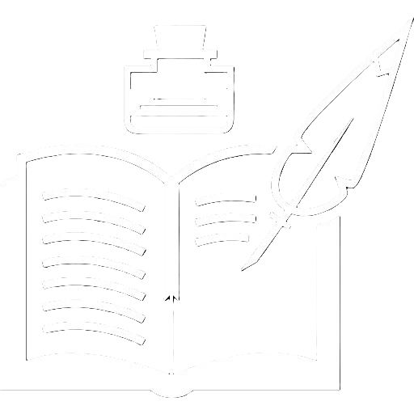

EX01
EX02
EX03
EX04
EX05
EX06
EX07
EX08
EX09
EX10
EX11
EX12
EX13
EX14
EX15
VOLTAR
Lista de Tarefas Dia a Dia
Manhã
Acordar e alongar
Tomar café da manhã saudável
Planejar o dia (revisar compromissos e metas)
Resolver tarefas rápidas e urgentes
Adicionar tarefa
Editar tarefa
Excluir tarefa
Tarde
Executar a tarefa mais importante do dia
Fazer uma pausa para alongamento ou caminhada
Responder mensagens e e-mails pendentes
Trabalhar em algo criativo ou estudar
Adicionar tarefa
Editar tarefa
Excluir tarefa
Noite
Revisar o que foi feito no dia
Organizar o ambiente para o dia seguinte
Relaxar (ler, assistir algo, jogar)
Dormir bem e recarregar as energias
Adicionar tarefa
Editar tarefa
Excluir tarefa